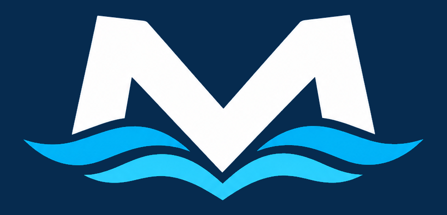

APPLICATION / 01

ANDROID • MARINS PROFESSIONNELSPUBLICATION GOOGLE PLAY EN PRÉPARATION
Mar’Tools
Les outils du marin professionnel.
Vos documents, vos simulations et le suivi de vos missions, réunis dans une application conçue pour accompagner votre activité.
- 01Documents maritimes
Regrouper vos PDF et suivre leurs dates de validité.
- 02Simulations de missions
Préparer vos estimations et exporter un récapitulatif PDF.
- 03Suivi de l’activité
Retrouver vos missions et les paiements enregistrés.